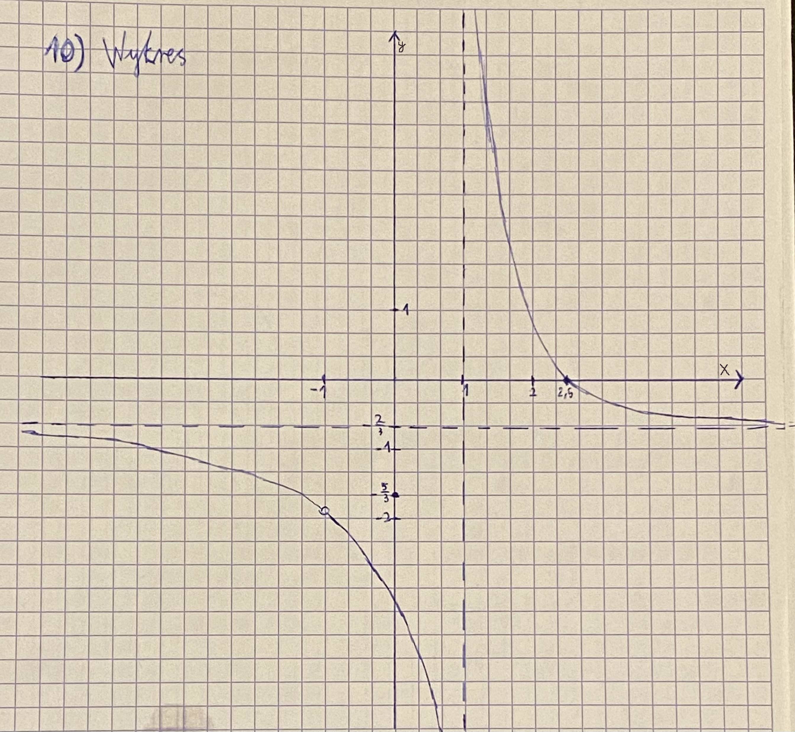

1)Dziedzina
\[3x^2-3 \neq 0\]
\[x^2-1 \neq 0\]
\[x \in \mathbb{R} \backslash\{-1,1\}\]
2)Miejsca zerowe
\[-2x^2+3x+5=0\]
\[\Delta=49\]
\[x=2,5 \lor x=-1(sprzeczne)\]
3)Punkt przecięcia z osią OY
\[P=(0,-\frac{5}{3})\]
4)Parzystość i nieparzystość
\[f(-x)=\frac{-2x^2-3x+5}{3x^2-3}\neq f(x)\]
\[-f(x)=\frac{2x^2-3x-5}{3x^2-3}\neq f(-x)\]
5)Granice
\[\lim_{x\to\infty}f(x)=-\frac{2}{3}\]
\[\lim_{x\to-\infty}f(x)=-\frac{2}{3}\]
6)Asymptoty
\[As.pionowa\]
\[\lim_{x\to 1^-}f(x)=[\frac{6}{0^-}]=-\infty\]
\[\lim_{x\to 1^+}f(x)=[\frac{6}{0^+}]=\infty\]
\[As.pozioma\]
\[\lim_{x\to\pm\infty}f(x)=-\frac{2}{3}\]
\[As.ukośna\]
\[brak\]
7)Monotoniczność
\[f'(x)=-\frac{1}{(x-1)^2}\]
\[D_{f'}:x\in \mathbb{R}\backslash\{1\}\]
\[\forall_{x\in D_f}f'(x)<0\]
\[f\searrow(-\infty,-1),(-1,1),(1,\infty)\]
8)Ekstremum
\[brak\]
9)Tabelka
| \[x\] |
\[(-\infty , -1)\] |
\[-1\] |
\[(-1,1)\] |
\[1\] |
\[(1, \infty)\] |
| \[f'(x)\] |
\[-\] |
\[-\frac{1}{4}<0\] |
\[-\] |
nie istnieje |
\[-\] |
| \[f(x)\] |
\[^{-\infty} \searrow _{-1}\] |
nie istnieje |
\[^{-1} \searrow _{1}\] |
nie istnieje |
\[^{1} \searrow _{\infty}\] |
10)Wykres
